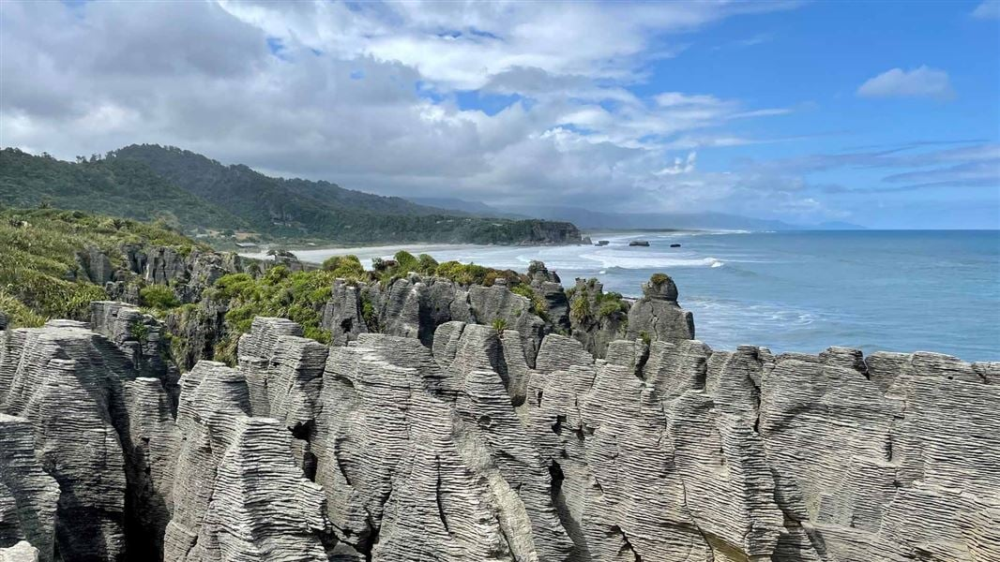

Punakaiki is best known for the Pancake Rocks and blowholes – a spectacular must-see when visiting the West Coast.
Punakaiki is the home of the Pancake Rocks and a base for exploring the Paparoa National Park. It’s a place of luxuriant coastal forest, fantastic limestone cliffs and canyons, mysterious caves, pristine rivers, and an absolutely spectacular coastline. Stay a while so you can explore everything on offer. There’s a great range of accommodation, superb short and long walks including the Paparoa Track, rivers to swim, waves to surf, fabulous sunsets and sparkling night skies.
